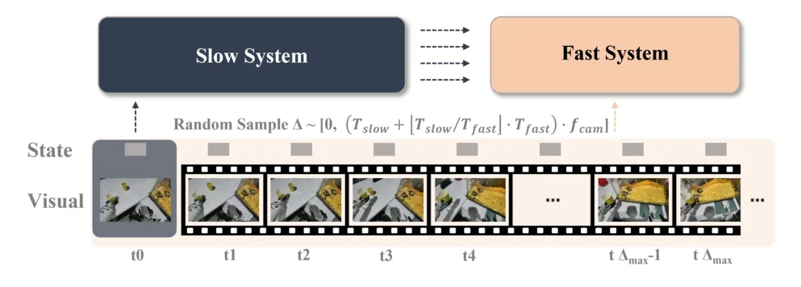
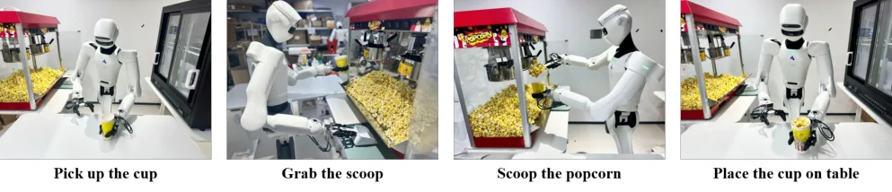
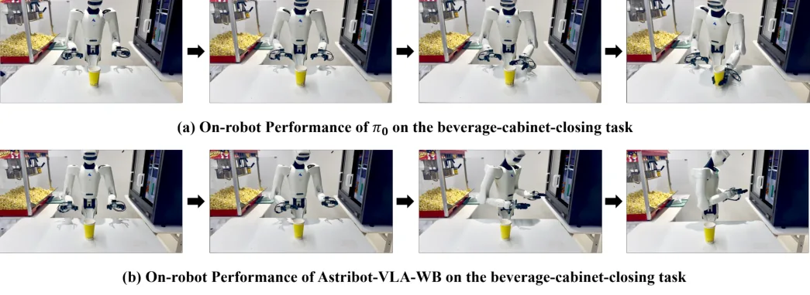

💡速记层 · 思想 / 逻辑 / 方法
默认读完就走的一层——只讲思想、逻辑、方法骨架；效果只作验证。要逐字核对原文再看下面「深读层」。
- 全身操作（25 DoF，动态视角，长程子任务）比固定臂操作对控制频率和精度要求更高，大 VLM 的 3–12 Hz 上限不够用。
- 现有双系统（π0、GR00T N1 等）两路同步运行 → 快路上限 = 慢路速度，问题未解。
- FiS-VLA/OpenHelix 有"异步"但用固定调度比，快路仍受慢路日程约束，不是真并行。
- 真正的解法：慢路以 1–3 Hz 异步刷新 bridge buffer（存 text/query/reasoning token），快路以 25–30 Hz 独立消费 buffer——完全解耦执行频率。
- 两路端到端联合训练（cross-timescale sampling 模拟异步延迟），保留语义-控制对齐，不靠手工模块拼接。
在爆米花商业场景全身操作任务上：DuoCore-FS 以 32.3 Hz 达到 90% 整体成功率，π0（同步）以 12.5 Hz 达到 85%——频率约 3×，精度持平或略优；OOD 泛化（杯子放边缘）显著优于 π0（50% vs 10%）；语言跟随（双任务区分）显著优于 π0（42.9% vs 14.3%）。
想看具体数字（点开）
- In-distribution：DuoCore-FS 90%（18/20）vs π0 85%（17/20），@32.3 Hz vs 12.5 Hz。
- Out-of-distribution：DuoCore-FS 50%（5/10）vs π0 10%（1/10）。
- Anomalous scenarios（杯子倒/翻/被拿走）：DuoCore-FS 95.8%（23/24）vs π0 91.7%（22/24）。
- Language following：DuoCore-FS 42.9%（3/7）vs π0 14.3%（1/7）。
- Action tokenizer 消融：FAST 平均序列 81.12 token（最长 205），RVQ-VAE 固定 36 token；FAST 慢路成功率 0%，RVQ-VAE 83.3%。
- 数据量：1,780 条轨迹（10.22 小时）；训练硬件 24×H100。
Track A（移动全身操作 VLA）直接命中：这正是在移动双臂全身平台（Astribot S1）上解决 VLA 实时性瓶颈的范式文章，bridge buffer 异步解耦 + 全身 action tokenizer 均可直接借鉴。Track B（足式控制算法）不直接相关——本文不涉及 locomotion 底层控制。故按框架深读，证据见下。
◆核心观点 · 证据
每条 = 中文论点 + 📍页/节 + 逐字原文(Ctrl-F 锚点) + 🀄译文 + 💡解读。
Most Vision-Language-Action (VLA) systems integrate a Vision-Language Model (VLM) for semantic reasoning with an action expert generating continuous action signals, yet both typically run at a single unified frequency. As a result, policy performance is constrained by the low inference speed of large VLMs. This mandatory synchronous execution severely limits control stability and real-time performance in whole-body robotic manipulation
However, in all these approaches the two subsystems still operate synchronously, requiring the fast system to wait for updates from the slow system. As a result, the overall action-generation frequency is fundamentally constrained by the slow inference speed of the VLM, preventing true fast–slow fully asynchronous execution.

the bridge buffer decouples the generation and consumption of representations, allowing the system to operate at different frequencies: the slow system refreshes Bt at a low rate of 1–3 Hz, while the fast system fetch the latest representations at 25–30 Hz to condition whole-body action generation.
In our design, the slow system and fast system run fully in parallel: the slow module engages in multi-faceted reasoning at a low frequency, e.g., generating discrete action tokens and providing high-level latent representations to guide the fast system, while the fast module translates the latest latent representations from the slow module together with real-time visual observations and proprioceptive states to generate high-frequency continuous actions.
Importantly, the parameters ψ of the fusion queries are trained through the fast system's action-generation objective, enabling them to progressively learn semantic and reasoning features that best support whole-body action generation.
By supplying both the original instruction and the semantic representations stored in the buffer, the fast system is able to maintain stable linguistic constraints while avoiding excessive reliance on dynamically extracted reasoning, thereby further improving overall task performance and long-term stability.
we further build a geometry-aware action tokenizer inspired by the residual VQ-VAE design used in RDT2. At each action step t, the action at ∈ R29 is factorized into three semantically grounded components, at = [apos t , arot t , agrip t ]
we find that naïvely tokenizing full-body actions with the fast tokenizer causes a combinatorial explosion, producing sequences that can span thousands of action tokens. ... As Table.5 shows, when applying the FAST method [18], the resulting action tokens are on average over 2× longer than those produced by our RVQ-VAE, with the maximum length exceeding exceeds 5×. This substantially constrains inference speed, limiting it to 0.95 Hz. Furthermore, sequential prediction of the left hand, right hand, and torso action tokens induces compounding errors. In deployment, our slow system with FAST[18] frequently generates incorrect tokens, leading to erratic motions and no successful task executions.

A key challenge is that the slow system operates at only 1–3 Hz, while the fast controller runs at 25–30 Hz. If both systems were updated using the same observation at each training step, this would lead to a significant train–inference mismatch. To address this issue, we introduce a cross-timescale sampling strategy that explicitly simulates the asynchronous behavior of the deployed system.

DuoCore-FS achieves success rates comparable to π0 [6] while running at nearly 3× its inference speed. This demonstrates the effectiveness of our dual system architecture: the slow system's reasoning tokens provide effective guidance to the fast system, boosting success, while asynchronous inference delivers the speedup.
The full DuoCore-FS system combines the strengths of DuoCore-FS-slow and π0 [6]: it improves generalization while retaining π0-level accuracy on fine-grained tasks.

DuoCore-FS demonstrates substantially stronger language-following ability than π0 [6], achieving a 42.9% success rate compared to 14.3%. We attribute this improved language-following performance to the slow system's autoregressive training objective, which encourages more consistent token-by-token reasoning over instructions and observations.
Astribot S1 is a mobile dual-arm manipulator featuring two 7-DoF arms with parallel-jaw grippers, a 4-DoF articulated torso, a 2-DoF head, and a 3-DoF omnidirectional mobile base
⎘开源状态
以下为截至 2026 年 6 月的最新实时核查结果（非仅依据 PDF）。
- 代码
- 未公开 arXiv 页面及 Astribot 官网均无公开代码链接；GitHub 上 Astribot-Dev 仅有仿真描述（
astribot_simulation/astribot_descriptions/astribot_msgs），无 DuoCore-FS 实现 - 权重
- 未公开 无公开权重或 checkpoint
- 数据
- 未公开 1,780 条商业场景轨迹未释出
- 平台
- 商业提供 论文明确表述：DuoCore-FS 实现（训练/推理/部署）作为 Astribot 平台的一部分提供给商业用户
论文 Abstract 最后一句明确："The implementation of DuoCore-FS, including training, inference, and deployment, is provided to commercial users by Astribot as part of the Astribot robotic platform." 这意味着该系统是商业产品，不计划开源。与 π0/openpi 或 GR00T N1 开源路线完全不同。学术借鉴只能依据论文描述复现。
The implementation of DuoCore-FS, including training, inference, and deployment, is provided to commercial users by Astribot as part of the Astribot robotic platform.
⚖批判 · 评级
① 真实商业场景全身操作落地，不是实验室 tabletop——爆米花商业摊位是极少见的 VLA 真实部署案例。② Bridge buffer 异步解耦机制设计清晰，cross-timescale co-training 是解决训练-推理 mismatch 的实用工程方案，可直接迁移。③ 全身动作 RVQ-VAE tokenizer 对 FAST 直接应用的失败（0% 成功率）分析深刻，揭示了全身 VLA 与固定臂 VLA 的本质差异。④ 速度约 3× 的提升在不降精度的前提下达成，验证了异步设计的有效性。
① 任务场景单一：只有爆米花舀取和饮料柜关门两个任务，泛化性未充分验证（论文自承需要更多任务评测）。② 完全闭源：商业产品路线，学术复现只能靠论文描述，与 openpi 生态截然不同，社区杠杆极小。③ 语言跟随成功率仍低（42.9%），主因是数据不平衡（关门数据仅 1%），未见数据平衡策略。④ 数据量仅 1,780 条轨迹/10 小时，缺少 OXE 或大规模预训练数据支撑，泛化能力存疑。⑤ 未与 Helix/Hume 有数值对比（仅定性对比），难以评估 SOTA 位置。
评级：Important 桥接 buffer 异步解耦 + 全身 RVQ tokenizer 是对全身 VLA 工程问题的重要贡献，但单任务商业闭源限制了直接学术影响力。